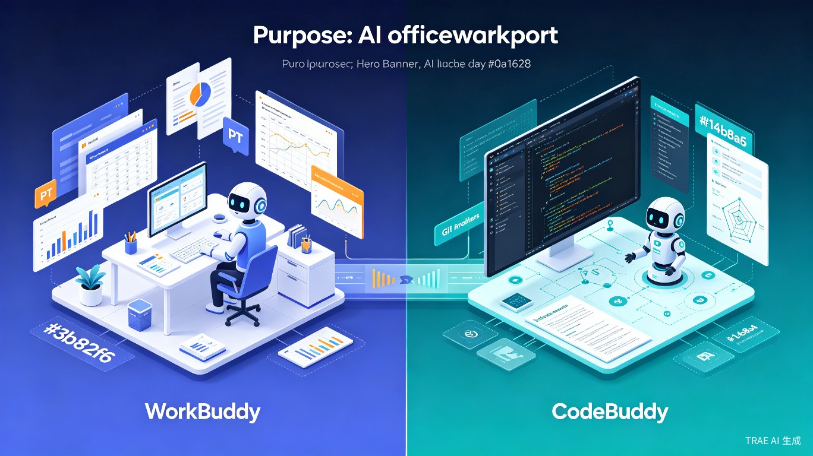

腾讯 AI 办公智能体与 AI 编程平台的设计哲学与工程实现解析
WorkBuddy 和 CodeBuddy 是腾讯 AI 产品矩阵中的两个核心产品，分别面向 办公场景 和 研发场景，构成了腾讯"AI 生产力工具"的完整版图。[1]
| 维度 | WorkBuddy | CodeBuddy |
|---|---|---|
| 产品定位 | AI 原生桌面智能体工作台 | 全流程 AI 编程工具全家桶 |
| 目标用户 | 非技术职场人（HR、行政、运营、销售、管理层） | 软件开发者（前端、后端、全栈、DevOps） |
| 核心场景 | 文档处理、数据分析、PPT 生成、文件整理 | 代码编写、调试、重构、代码审查、部署 |
| 交互方式 | 自然语言指令，直接交付成果文件 | 对话式编程 + 代码编辑器操作 |
| 产品形态 | 桌面客户端（Windows/macOS） | IDE + 编辑器插件 + CLI 三形态 |
| 上线时间 | 2026 年 3 月 9 日 | 2025 年 7 月 22 日（IDE 版） |
WorkBuddy 和 CodeBuddy 并非孤立产品，它们共享腾讯云的 三层 AI Agent 技术体系：[2]
graph TB
A[腾讯云 AI Agent 三层体系] --> B[应用层]
A --> C[智能服务层]
A --> D[基础设施层]
B --> B1[WorkBuddy - 办公场景]
B --> B2[CodeBuddy - 研发场景]
B --> B3[创意设计智能体]
C --> C1[Harness API]
C --> C2[多 Agent 编排]
C --> C3[Memory 系统]
C --> C4[安全沙箱]
D --> D1[大语言模型平台]
D --> D2[混元 Hy3]
D --> D3[DeepSeek/GLM/Kimi]
共享的核心技术能力包括：
关键洞察：WorkBuddy 和 CodeBuddy 是"同根同源、各展所长"的关系。它们共享底层 AI 基础设施，但在应用层针对完全不同的用户群体和工作流程进行了深度定制。这种架构既保证了技术投入的规模效应，又确保了产品体验的专业性。
WorkBuddy 的定位是 "给超级个体造一个 AI 工作台"。它面向的是没有编程背景、但希望借助 AI 提升办公效率的广大职场人群。[3]
核心使用场景包括：
设计哲学：WorkBuddy 的核心设计理念是"让 AI 不只是回答问题，而是直接完成工作"。用户输入一句话指令，系统自主规划、执行，最终直接输出可交付的成果文件（PPT、Excel、Word、图表等）。[4]
WorkBuddy 的最大特色是 "一句话完成任务"：
系统支持多个 AI Agents 同时工作：[5]
WorkBuddy 可以直接读取、修改、批量处理电脑中的本地文件：
用户可以通过手机端绑定的企业微信、QQ 等工具，远程操控电脑端的 WorkBuddy：[6]
WorkBuddy 100% 兼容 OpenClaw 的全量 Skills，支持 MCP 协议扩展：[7]
graph LR
A[用户指令] --> B[意图理解]
B --> C[任务规划]
C --> D[多 Agent 调度]
D --> D1[数据分析 Agent]
D --> D2[内容生成 Agent]
D --> D3[研究 Agent]
D1 --> E[本地文件操作]
D2 --> E
D3 --> F[网络搜索]
E --> G[成果输出]
F --> G
G --> H[PPT/Excel/Word/图表]
WorkBuddy 采用多层安全防御策略：[8]
WorkBuddy 支持多种大模型自由切换：[9]
根据不同任务需求智能选择适配模型，兼顾效率与精准度。
WorkBuddy 企业版在 personal 版基础上增加了组织级能力：[10]
CodeBuddy 的定位是 "全流程 AI 编程工具全家桶"。它不是单一模型或 IDE 插件，而是覆盖 IDE、插件、CLI 三种形态的完整编程工具链。[11]
三种产品形态：
面向产品、设计、全栈及初学者，主打"对话即编程"，从需求到部署全链路
嵌入 VS Code 和 JetBrains，提供行间补全、代码解释、单元测试生成
面向 DevOps 与资深工程师，支持 CI/CD 集成、批量重构、自动化巡检
CodeBuddy 将设计模式和计划模式作为核心功能独立出来：[12]
设计 rationale：CodeBuddy 产品负责人黄广民表示，将设计和计划模式单独分离有两个原因：一是传统研发过程本就分阶段，不同角色诉求各有侧重；二是这两个模式能为后续 Coding Agent 提供规范和约束，避免代码生成像"开盲盒"。
CodeBuddy 的 Plan 模式解决了 AI 直接改代码的"黑盒"问题：[13]
SPEC 模式是 CodeBuddy 的企业级核心能力：[14]
CodeBuddy 内置 Prompt 优化能力，帮助用户更精准地表达需求：[15]
CodeBuddy 采用"模拟人类理解项目"的模式：[16]
graph TB
A[CodeBuddy 三形态] --> B[IDE]
A --> C[插件]
A --> D[CLI]
B --> B1[设计模式]
B --> B2[计划模式]
B --> B3[编程模式]
B1 --> B1a[Figma 转代码]
B1 --> B1b[图片识别]
B2 --> B2a[技术方案生成]
B2 --> B2b[用户确认]
B3 --> B3a[Ask 模式]
B3 --> B3b[Craft 模式]
C --> C1[VS Code 插件]
C --> C2[JetBrains 插件]
D --> D1[CI/CD 集成]
D --> D2[批量重构]
D --> D3[自动化巡检]
CodeBuddy 集成了多种模型，但采用差异化使用策略：[17]
CodeBuddy 深度集成腾讯生态：[18]
CodeBuddy 企业版定价 78 元/人/月，个人版完全免费：[19]
| 维度 | WorkBuddy | CodeBuddy |
|---|---|---|
| 产品形态 | 桌面客户端（单形态） | IDE + 插件 + CLI（三形态） |
| 交互界面 | 对话式 + 文件操作 | 代码编辑器 + 对话式 |
| 输出形式 | PPT、Excel、Word、图表 | 代码、配置文件、技术文档 |
| 执行环境 | 本地沙盒 | 本地 IDE / 远程沙箱 |
| 扩展能力 | MCP + OpenClaw Skills | MCP + 自定义插件 |
| 能力 | WorkBuddy | CodeBuddy |
|---|---|---|
| 任务规划 | 自动拆解办公任务 | Plan 模式 + SPEC 模式 |
| 多 Agent 协作 | 数据分析 + 内容生成 + 研究 Agent | Multi-Agent 并行编码 |
| 记忆系统 | 个人偏好 + 项目知识 | 代码库理解 + 项目索引 |
| 模型调度 | 混元 / DeepSeek / GLM / Kimi | 混元 Turbo S / DeepSeek / GLM / Kimi |
| 安全机制 | 沙盒 + 高危拦截 + 执行确认 | 沙箱隔离 + SPEC 审核 + 泄露拦截 |
| 场景 | WorkBuddy | CodeBuddy |
|---|---|---|
| 从 0 到 1 | 一句话生成 PPT/报告 | 一句话生成完整项目代码 |
| 迭代优化 | 修改文档内容、调整格式 | 修改代码逻辑、重构架构 |
| 协作场景 | 项目空间共享、数字员工 | 代码审查、PR 生成、团队协作 |
| 移动办公 | 手机远程遥控电脑端 | Background 模式（Beta） |
| 生态集成 | 企业微信、腾讯文档、腾讯网盘 | 微信开发者工具、腾讯云、TAPD |
| 维度 | WorkBuddy | CodeBuddy |
|---|---|---|
| 个人版 | 免费（公测阶段） | 完全免费 |
| 企业版定价 | 未公开（预计订阅制） | 78 元/人/月 |
| 计费模式 | Credits 额度制 | 按人计费 + 用量 |
| 部署方式 | 本地客户端 + 云端 | 本地 IDE + 私有化部署 |
洞察 1：同源异构的技术架构
WorkBuddy 和 CodeBuddy 共享腾讯云的 Harness API、Memory 系统、安全沙箱等底层能力，但在应用层采用了完全不同的架构设计。WorkBuddy 是"单形态深度优化"（桌面客户端做到极致），CodeBuddy 是"多形态全覆盖"（IDE + 插件 + CLI）。这种"同源异构"策略既保证了技术投入的规模效应，又满足了不同场景的专业需求。
洞察 2：用户门槛的差异化设计
WorkBuddy 面向非技术人员，设计核心是"零门槛"——免部署、免配置、开箱即用，支持单句指令发起任务。CodeBuddy 面向开发者，设计核心是"全流程覆盖"——从需求澄清、技术方案、代码生成到部署运维，每个环节都提供 AI 辅助。两者的交互复杂度与目标用户的技术背景精准匹配。
洞察 3：安全与可控性的不同侧重
WorkBuddy 的安全设计侧重"数据本地留存"——文件、数据不回传不上云，保护企业敏感信息。CodeBuddy 的安全设计侧重"代码质量可控"——SPEC 模式、泄露拦截、Diff 审核，确保 AI 生成的代码符合工程规范。两者都采用了沙箱隔离，但 WorkBuddy 更关注数据隐私，CodeBuddy 更关注代码安全。
| 权衡维度 | WorkBuddy | CodeBuddy |
|---|---|---|
| 广度 vs 深度 | 广度优先：覆盖多种办公场景 | 深度优先：覆盖软件工程全生命周期 |
| 自动化 vs 可控性 | 高度自动化：用户只需验收成果 | 人机协同：Plan/SPEC 模式确保可控 |
| 本地 vs 云端 | 本地执行优先，数据不上云 | 混合模式，支持远程沙箱 |
| 通用 vs 专业 | 通用办公：谁都能用 | 专业编程：开发者专用 |
| 即时 vs 规范 | 即时交付：快速输出成果 | 规范驱动：SPEC 确保质量 |
WorkBuddy 和 CodeBuddy 并非竞争关系，而是 互补协同 的产品矩阵：[20]
graph TB
A[腾讯云 AI 生产力矩阵] --> B[WorkBuddy]
A --> C[CodeBuddy]
B --> D[非技术职场人]
C --> E[软件开发者]
D --> F[办公效率提升]
E --> G[研发效率提升]
F --> H[企业整体效率]
G --> H
B -.->|共享| I[Harness API]
C -.->|共享| I
B -.->|共享| J[安全沙箱]
C -.->|共享| J
B -.->|共享| K[多模型调度]
C -.->|共享| K
协同效应体现在：
基于当前架构，两个产品的可能演进方向：
更深的企业集成（ERP/CRM）、多模态输入（语音/图片）、智能流程自动化（RPA + AI）
Background 模式成熟、多 Agent 团队协作、AI 自主运维、更深度的小程序生态集成
办公数据驱动研发决策、研发成果自动同步办公文档、统一的企业 AI 治理平台
Skills 市场开放、第三方开发者生态、行业解决方案模板、企业定制化服务
结语：WorkBuddy 和 CodeBuddy 代表了腾讯在 AI 生产力领域的"双轮驱动"战略。WorkBuddy 让 AI 成为每个职场人的"办公搭子"，CodeBuddy 让 AI 成为每个开发者的"编程搭档"。两者共享底层技术、互补应用场景，共同构成了腾讯"AI 原生工作方式"的完整图景。从设计架构来看，WorkBuddy 是"极简主义"的胜利——用最少的操作完成最复杂的办公任务；CodeBuddy 是"系统工程"的胜利——用规范的流程确保 AI 编程的质量和可控性。